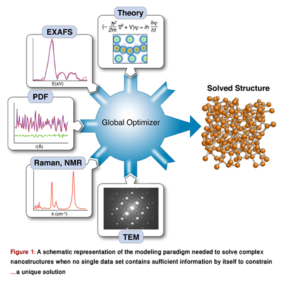

The great gift of x-ray crystallography has made us almost complacent in our ability to locate the three-dimensional coordinates of atoms in a crystal with a precision of around 10-4 nm. However, the powerful methods of crystallography break down for structures in which order only extends over a few nanometers. In fact, as we near the one hundred year mark since the birth of crystallography, we face a resilient frontier in condensed matter physics: our inability to routinely and robustly determine the structure of complex nanostructured and amorphous materials [1].
Knowing the structure and arrangement of atoms in a solid is so fundamental to understanding its properties that the topic routinely occupies the early chapters of every solid-state physics textbook. Yet what has become clear with the emergence of nanotechnology is that diffraction data alone may not be enough to uniquely solve the structure of nanomaterials. As part of a growing effort to incorporate the results of other techniques to constrain x-ray refinements—a method called “complex modeling” (Fig. 1)—Mathew Cliffe, Martin Dove, and Andrew Goodwin at Cambridge University in the UK and David Drabold at Ohio University in the US describe in Physical Review Letters a simple but elegant approach for combining information from spectroscopy with diffraction data to solve the structure of several amorphous and nanostructured materials [2].
Crystallography just works, so we rarely question how and why this is so, yet understanding the physics of diffraction can be very helpful as we consider the nanostructure problem. The relationship between the electron density distribution in three dimensions (i.e., the crystal structure) and an x-ray diffraction pattern is well established: the measured intensity distribution in reciprocal space is the square of the Fourier transform of the autocorrelation function 〈ρ(r)ρ(r+r′)〉 of the electron density distribution ρ(r) [3]. The fact that we get the autocorrelation function (rather than just the density distribution) by Fourier transforming the measured intensity leaves us with a very tricky inverse problem: we have to extract the density from its autocorrelation function. The direct problem of predicting the diffraction intensity given a particular density distribution is trivial, but the inverse, unraveling from the intensity distribution the density that gives rise to it, is a highly nontrivial problem in global optimization. In crystallography, this challenging, nontrivial task is sometimes referred to as the “phase problem.” The diffraction pattern is a wave-interference pattern, but we measure only the intensities (the squares of the waves) not the wave amplitudes. To get the amplitude, you take the square root of the intensity I, but in so doing you lose any knowledge of the phase of the wave ϕ, and half the information needed to reconstruct the density is lost, since I=Ψ*Ψ=A*e-iϕAeiϕ=|A2|.
When solving such inverse problems, you hope you can start with a uniqueness theorem that reassures you that, under ideal conditions, there is only one solution: one density distribution that corresponds to the measured intensity. Then you have to establish that your data set contains sufficient information to constrain that unique solution. This is a problem from information theory that originated with Reverend Thomas Bayes’ work in the 18th century, and the work of Nyquist and Shannon in the 20th century [4, 5], and describes the fact that the degrees of freedom in the model must not exceed the number of pieces of independent information in the data. Finally, you need an efficient algorithm for doing the reconstruction.
This is exactly how crystallography works. The information is in the form of Bragg peak intensities and the degrees of freedom are the atomic coordinates. Crystal symmetry lets us confine the model to the contents of a unit cell, rather than all of the atoms in the crystal, keeping the degrees of freedom admirably small in number. A measurement yields a multitude of Bragg peak intensities, providing ample redundant intensity information to make up for the lost phases. Finally, there are highly efficient algorithms, such as “direct methods,” that make excellent use of the available information and constraints to find the solution quickly from a horrendously large search space. The problem is often so overconstrained that we can cavalierly throw away lots of directional information. In particular, even though Bragg peaks are orientationally averaged to a 1D function in a powder diffraction measurement, we still can get a 3D structural solution [6].
Now it becomes easy to understand the enormous challenge of solving nanostructures: the information content in the data is degraded while the complexity of the model is much greater. First, finite size effects broaden the sharp Bragg peaks and the nanometer scale is precisely the point where the broadening is sufficient that the peaks start to overlap. (In fact, at this point, we can’t even call them Bragg peaks). Second, the complexity of the structural solutions goes up. Now, we need more than the coordinates of a few atoms in a unit cell—we need the arrangement of hundreds or thousands of atoms in a nanoparticle. Moreover, there can be complicated effects, like finite-size induced relaxations in the core and the surface. The final indignity is that the measured scattering intensity asymptotically approaches zero as the nanoparticle gets smaller and the weak scattering of x rays, so useful in bulk samples, turns around and bites us. In general, we have to measure the intensity from a multitude of nanoparticles or nanoclusters, and then tussle with the problem of how to deal with the averaged data. Extensive efforts are being made, with notable successes [7, 8, 9], but the nanostructure problem remains a thorny one.
The use of total scattering and atomic-pair distribution function (PDF) measurements for nanostructure studies is one promising approach [10]. In these experiments, powders of identical particles are studied using x-ray powder diffraction, resulting in good signals, but highly averaged data. Short wavelength x rays or neutrons are used for the experiments giving data with good real-space resolution, and the resulting data are fit with models of the nanoparticle structures. Uniqueness is a real issue, as is the availability of good nanostructure solution algorithms; however, unique structure solutions of clusters such as C60 have been demonstrated recently [7]. These measurements have served as proof of principle demonstrations that unique nanostructure solutions from PDF data can exist in favorable situations. However, there are also some less encouraging results. Attempts to fit amorphous structures, which have local order on the subnanometer scale and lots of disorder, yield highly degenerate results: many structure models, some completely physically nonsensical, give equivalent fits to the data within errors [11]. Degenerate solutions imply that there is insufficient information in the data set to constrain a unique solution. At this point we would like to seek additional constraints coming from prior knowledge about the system, or additional data sets, such that these different information sources can be combined, or “complexed,” to constrain a unique solution, as shown in Fig. 1 [1]. Complexing is done either by adding constraints on how model parameters can vary (for example, crystal symmetries), or by adding terms to the target (or cost) function that is being minimized in the global optimization process.
It is a major challenge to figure out ways to incorporate disparate information sources into the global optimization scheme and how to weight their contributions to the cost function. In their paper, Cliffe et al. demonstrate an elegant approach for introducing the constraint that all local environments for a particular atom are identical, information that is available, in principle, from spectroscopy measurements [2]. In simple terms, they introduce a variance term into the cost function that adds a cost when atomic environments of equivalent atoms in the model deviate too much from one other.
What is encouraging about this result is that, in the systems they studied, this simple term was the difference between successful and unsuccessful nanostructure solutions. This tells us that complex modeling is not just a pipe dream, but a real possibility. We see that a relatively simple but well chosen constraint added to the cost function can give the structure solution real legs. In Cliffe et al.’s work it allowed an inefficient optimization algorithm, called simulated annealing [12], to solve the C60 structure by vastly reducing the volume of the search space, even though for this particular case, extra constraints beyond the total scattering data turn out to be unnecessary to solve the structure of C60 [7]. We have seen a similar effect in our own work, where simply adding ionic radii to a structure solution allowed us to solve structures from total scattering data [13]. Again, applying a simple constraint, which at first sight contained a rather limited amount of information, was all that was needed for success.
We may be relearning lessons from crystallography again. Crystallographers have been expert in applying simple constraints to achieve great effects. Two key components in successful structure-seeking algorithms are positivity and atomicity constraints. The first requires that the correct solution will not include any nonsensical negative density, and the second ensures that electron density is sharply peaked in local regions of space (the locations of the atoms) and approaches zero in between. These constraints are just common sense, but place enormous restrictions on the solution space and the efficiency and uniqueness of solutions. Nanostructure solution is much younger than crystallography, but the field is rapidly growing up.
Acknowledgments
Support is acknowledged from the US National Science Foundation through Grants DMR-0520547 and DMR-0703940 and US Department of Energy under contract No. DEAC02-98CH10886. I would like to thank Igor Levin, Normand Mousseau, and Pavol Juhas for help putting together the figure.
References
- S. J. L. Billinge and I. Levin, Science 316, 561 (2007).
- M. J. Cliffe, M. T. Dove, D. A. Drabold, and A. L. Goodwin, Phys. Rev. Lett. 104, 125501 (2010).
- C. Giacovazzo, G. Gilli, H. L. Monaco, and D. Viterbo, Fundamentals of crystallography (Oxford University Press, Oxford, 1992)[Amazon][WorldCat].
- H. Nyquist, IEEE Trans. 47, 617 (1928).
- C. E. Shannon, Proc. IRE 37, 10 (1949).
- Structure Determination from Powder Diffraction Data, edited by W. I. F. David, K. Shankland, L. B. McCusker, and C. Baerlocher (Oxford University Press, Oxford, 2002)[Amazon][WorldCat].
- P. Juhás, D. M. Cherba, P. M. Duxbury, W. F. Punch, and S. J. L. Billinge, Nature 440, 655 (2006).
- P. D. Jadzinsky, G. Calero, C. J. Ackerson, D. A. Bushnell, and R. D. Kornberg, Science 318, 430 (2007).
- K. E. Schmidt, J. C. H. Spence, U. Weierstall, R. Kirian, and R. B. Doak, Phys. Rev. Lett. 101, 115507 (2008).
- T. Egami and S. J. L. Billinge, Underneath the Bragg peaks: structural analysis of complex materials (Pergamon Press, Oxford, 2003)[Amazon][WorldCat].
- O. Gereben and L. Pusztai, Phys. Rev. B 50, 14136 (1994).
- N. Metropolis and S. Ulam, J. Am. Stat. Assoc. 44, 335 (1949).
- P. Juhás, L. Granlund, S. R. Gujarathi, P. M. Duxbury, and S. J. L. Billinge, arXiv:1003.1097.
About the Authors
Simon J. L. Billinge
Simon Billinge is a Professor of Applied Physics, Materials Science, and Applied Mathematics at Columbia University. He received his B.A. and Ph.D. in materials science from Oxford University and University of Pennsylvania, respectively. He would love to solve the nanostructure problem, but in the meantime is developing scattering methods to that end and applying them to answer scientific and technological questions in a wide variety of nanomaterials from high-temperature superconductors to pharmaceuticals.